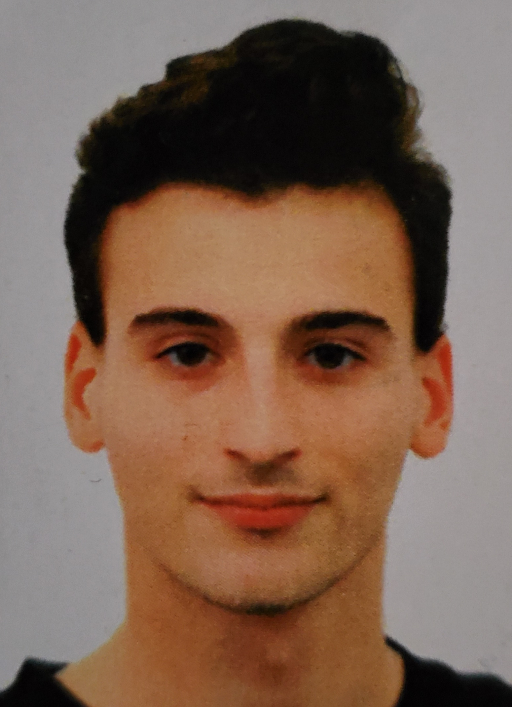

panoramica
Appassionato di informatica fin da bambino,
ho maturato poi un particolare interesse per lo sviluppo di pagine web e applicazioni per mobile durante
il mio percorso di studi alle scuole superiori.
Tutt'ora approfondisco questi due ambiti nel tempo libero.
esperienze lavorative
ADDETTO VENDITE
UNIEURO TAVAGNACCO | NOVEMBRE 2020 - IN CORSO
- VENDITE REPARTO TELEFONIA, INFORMATICA E TELEVISIONI
- ESPERIENZA COME ADDETTO CASSA
- ESPERIENZA COME MAGAZZINIERE
RESPONSABILE SISTEMI INFORMATICI
SERRAMETAL SRL | GENNAIO 2020 - MARZO 2020
- ARCHIVIAZIONE, RECUPERO E MANIPOLAZIONE DEI DATI
- MANUTENZIONE DISPOSITIVI ELETTRONICI QUALI PC, STAMPANTI E SERVER DI RETE
- PREPARAZIONE DISEGNI CAD PER TAGLIO INFISSI
- GESTIONE SITO WEB E MAIL AZIENDALE
istruzione e formazione
DIPLOMA DI PERITO INFORMATICO | 2020
PRESSO ISIS R. D'ARONCO DI GEMONA DEL FRIULI
STUDENTE FINO AL QUARTO ANNO | 2014-2019
PRESSO ISIS ARTURO MALIGNANI DI UDINE
SEZIONE INFORMATICA E TELECOMUNICAZIONI
- CORSO DI NETWORKING TRAMITE CISCO NETACAD
- ESPERIENZA DI MODELLAZIONE CAD 2D E 3D
- CORSO BASE DI VIDEGAME DEVELOPING CON IL TEAM DI ETERNIUM GALAXY